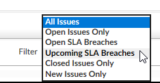

Issue SLAs
You can assign service level agreements (SLAs) to issues.
Issue browses show the SLA date of the issue, and you can filter to show issues that have breached SLA or that will breach SLA within a set number of days.

The scheduling screen can be configured to highlight time slots according to whether they are within or outside the SLA for an issue.
The SLA field on issue browses, and time slots on the left of the scheduling screen, are ed as follows:
- Green background - before the SLA date for the issue.
- Yellow background - within a set number of days before the SLA date for the issue (SLA field only).
- Orange background - on the SLA date for the issue.
- Red background - after the SLA date for the issue.
Configuring SLAs
You can set default SLA response times for:
- Different call types (using Call Types).
- Different issue priorities (using Issue Priority Codes).
The SLA date for an issue will be the date calculated from the call type or the date calculated from the priority, whichever is earlier.
You can use just call types, or just issue priorities, to set the SLA dates: if you leave the SLA as 0, it is ignored.